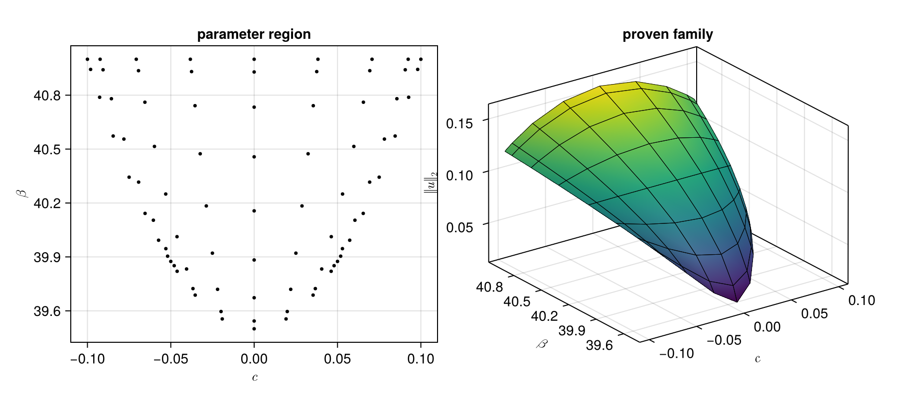

Parameter continuation for the Cahn-Hilliard equation
The Cahn-Hilliard example proves the existence of a steady-state for a single choice of the parameters $(c, \beta)$; here we prove the existence of a whole surface of steady-states over a curved region of the parameter plane.
Step 1: Formulation
using RadiiPolynomial, LinearAlgebra
F(u, c, β) = Laplacian() * u + β * (u - u^3 - c)
DF(u, c, β) = Laplacian() + Multiplication(β * (exact(1) - exact(3) * u^2))The parameter region is described by a Coons patch: given four boundary curves $\gamma_1, \dots, \gamma_4$, the map $\theta$ interpolates them into a parameterization of the enclosed region by the square $[-1,1]^2$. This lets us cover a curved region of the $(c, \beta)$ plane while keeping the Chebyshev machinery on a square.
struct BoundaryCurves{T₁,T₂,T₃,T₄}
γ₁ :: T₁
γ₂ :: T₂
γ₃ :: T₃
γ₄ :: T₄
end
α(s) = (s + 1) / 2 # [-1,1] → [0,1]
θ_edge(s₁, s₂, γᵢ, γⱼ) = γᵢ(s₁) + α(s₂) * (γⱼ(-s₁) - γᵢ(s₁))
θ_corners(s₁, s₂; P₁, P₂, P₃, P₄) =
P₁ + α(s₁) * (P₂ - P₁) + α(s₂) * (P₄ - P₁ + α(s₁) * (P₃ - P₄ - P₂ + P₁))
θ(curves::BoundaryCurves, s₁, s₂) =
θ_edge(s₁, s₂, curves.γ₁, curves.γ₃) +
θ_edge(-s₂, s₁, curves.γ₄, curves.γ₂) -
θ_corners(s₁, s₂; P₁ = curves.γ₁(-1), P₂ = curves.γ₁(1), P₃ = curves.γ₃(-1), P₄ = curves.γ₃(1))γ₁(s) = [ 0.1 * (s - 3) / 4, 39.5 + 150 * (0.1 * (s - 3) / 4)^2]
γ₂(s) = [ 0.1 * s / 2, 39.5 + 150 * (0.1 * s / 2)^2]
γ₃(s) = [ 0.1 * (s + 3) / 4, 39.5 + 150 * (0.1 * (s + 3) / 4)^2]
γ₄(s) = [-0.1 * s, 41]
curves = BoundaryCurves(γ₁, γ₂, γ₃, γ₄)Step 2: Approximation (floating-point arithmetic)
N₁, N₂ = 8, 8
K = 20
θ_grid = [θ(curves, cospi(j₁/N₁), cospi(j₂/N₂)) for j₁ ∈ 0:N₁, j₂ ∈ 0:N₂]
u_grid = Matrix{Sequence}(undef, N₁+1, N₂+1)
A_finite_grid = Matrix{LinearOperator}(undef, N₁+1, N₂+1)c₀, β₀ = θ_grid[N₁+1,N₂+1]
u_init = Sequence(evensym(Fourier(K, π)), [-0.1022666446473428 ; 0 ; 0.044213651292169816 ; zeros(K-2)])
u_bar, success_newton = newton(u -> (F(u, c₀, β₀), DF(u, c₀, β₀)), u_init)
Π = Projection(space(u_bar))
for j₂ ∈ N₂+1:-1:1, j₁ ∈ N₁+1:-1:1
cⱼ, βⱼ = θ_grid[j₁,j₂]
w = j₁ == N₁+1 ? (j₂ == N₂+1 ? u_bar : u_grid[N₁+1,j₂+1]) : u_grid[j₁+1,j₂] # predictor
uⱼ, success_newton_j = newton(u -> (F(u, cⱼ, βⱼ), DF(u, cⱼ, βⱼ)), w)
success_newton_j || error()
u_grid[j₁,j₂] = uⱼ
A_finite_grid[j₁,j₂] = inv(Π * DF(uⱼ, cⱼ, βⱼ) * Π)
end
maximum(u -> abs(u[K]), u_grid) # the order K is large enough across the whole region8.093724250425546e-15c_cheb = interval(real(to_coef(getindex.(θ_grid, 1), Chebyshev(N₁) ⊗ Chebyshev(N₂))))
β_cheb = interval(real(to_coef(getindex.(θ_grid, 2), Chebyshev(N₁) ⊗ Chebyshev(N₂))))
u_cheb = interval(to_coef(u_grid, Chebyshev(N₁) ⊗ Chebyshev(N₂)))
A_finite_cheb = interval(to_coef(A_finite_grid, Chebyshev(N₁) ⊗ Chebyshev(N₂)))
space(u_cheb)(Chebyshev(8) ⊗ Chebyshev(8) ⊗ Fourier(20, [3.14159, 3.1416]_com))_symusing CairoMakie
vals = [norm(u_grid[j₁,j₂], 2) for j₁ ∈ 1:N₁+1, j₂ ∈ 1:N₂+1]
fig = Figure(; size = (900, 400))
ax1 = Axis(fig[1,1]; xlabel = L"c", ylabel = L"\beta", title = "parameter region")
scatter!(ax1, vec([Point2f(θ_grid[j₁,j₂]) for j₁ ∈ 1:N₁+1, j₂ ∈ 1:N₂+1]); color = :black, markersize = 5)
ax2 = Axis3(fig[1,2]; xlabel = L"c", ylabel = L"\beta", zlabel = L"\|u\|_2",
azimuth = -0.7π, title = "proven family")
surface!(ax2,
[θ_grid[j₁,j₂][1] for j₁ ∈ 1:N₁+1, j₂ ∈ 1:N₂+1],
[θ_grid[j₁,j₂][2] for j₁ ∈ 1:N₁+1, j₂ ∈ 1:N₂+1],
vals; colormap = :viridis)
wireframe!(ax2,
[θ_grid[j₁,j₂][1] for j₁ ∈ 1:N₁+1, j₂ ∈ 1:N₂+1],
[θ_grid[j₁,j₂][2] for j₁ ∈ 1:N₁+1, j₂ ∈ 1:N₂+1],
vals; color = :black, linewidth = 0.5)
fig
struct PseudoInverseLaplacian <: AbstractDiagonalOperator end
RadiiPolynomial.getcoefficient(::PseudoInverseLaplacian, (codom, i)::Tuple{SymmetricSpace{<:Fourier},Integer}, (dom, j)::Tuple{SymmetricSpace{<:Fourier},Integer}) =
(i == j) & !(i == j == 0) ? inv(-(frequency(dom) * exact(i))^2) : zero(frequency(dom))Step 3: Bounds (interval arithmetic)
#- Y bound
m_Y = grid_size(Chebyshev(4N₁) ⊗ Chebyshev(4N₂))
c_grid_Y = to_grid(c_cheb, m_Y)
β_grid_Y = to_grid(β_cheb, m_Y)
u_grid_Y = to_grid(u_cheb, m_Y)
A_grid_Y = to_grid(A_finite_cheb, m_Y) .+ PseudoInverseLaplacian() * (interval(I) - interval(Π))
Y = norm(to_coef(A_grid_Y .* F.(u_grid_Y, c_grid_Y, β_grid_Y), Chebyshev(4N₁) ⊗ Chebyshev(4N₂)), Ell1())[0.000386405, 0.000386406]_com#- Z₁ bound
m_Z = grid_size(Chebyshev(3N₁) ⊗ Chebyshev(3N₂))
c_grid_Z = to_grid(c_cheb, m_Z)
β_grid_Z = to_grid(β_cheb, m_Z)
u_grid_Z = to_grid(u_cheb, m_Z)
A_grid_Z = to_grid(A_finite_cheb, m_Z) .+ PseudoInverseLaplacian() * (interval(I) - interval(Π))
Π_3K = interval(Projection(evensym(Fourier(3K+1, π))))
Z₁_finite = opnorm(to_coef(Π_3K .- A_grid_Z .* (DF.(u_grid_Z, c_grid_Z, β_grid_Z) .* Π_3K), Chebyshev(3N₁) ⊗ Chebyshev(3N₂)), Ell1(), Ell1())
Z₁_tail = norm(β_cheb, Ell1()) * (interval(1) + interval(3) * norm(u_cheb, Ell1())^2) / (interval(π) * interval(K+2))^2
Z₁ = max(Z₁_finite, Z₁_tail)[0.338169, 0.33817]_com#- Z₂ bound
R = exact(10sup(Y))
normA = max(opnorm(A_finite_cheb, Ell1(), Ell1()), interval(1)/interval(π)^2)
Z₂ = exact(3) * norm(β_cheb, Ell1()) * normA * (exact(2) * norm(u_cheb, Ell1()) + R)[544.191, 544.192]_comThe computer-assisted proof is completed by the Radii Polynomial Theorem; the bounds being uniform over the parameter square, the contraction holds simultaneously for every $(s_1,s_2) \in [-1,1]^2$:
ie, success_contraction = interval_of_existence(Y, Z₁, Z₂, R; verbose = true)┌ Info: success: interval found
│ Y = [0.000386405, 0.000386406]_com
│ Z₁ = [0.338169, 0.33817]_com
│ Z₂ = [544.191, 544.192]_com
│ R = ExactReal{Float64}(0.00386405948057856434008083823528068023733794689178466796875)
│ Δ = [0.0174612, 0.0174614]_com
└ roots = ([0.000973349, 0.000973351]_com, [0.00145899, 0.001459]_com)Step 4: Conclusion
inf(ie) # smallest error, uniform over the parameter region0.0009733502878532479